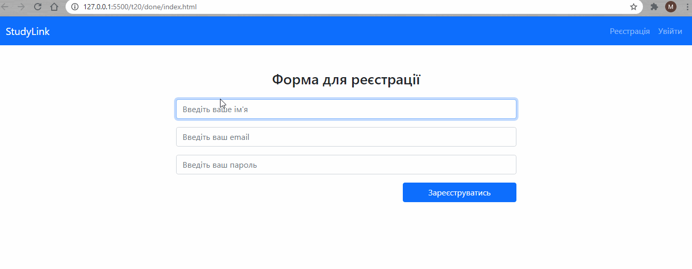
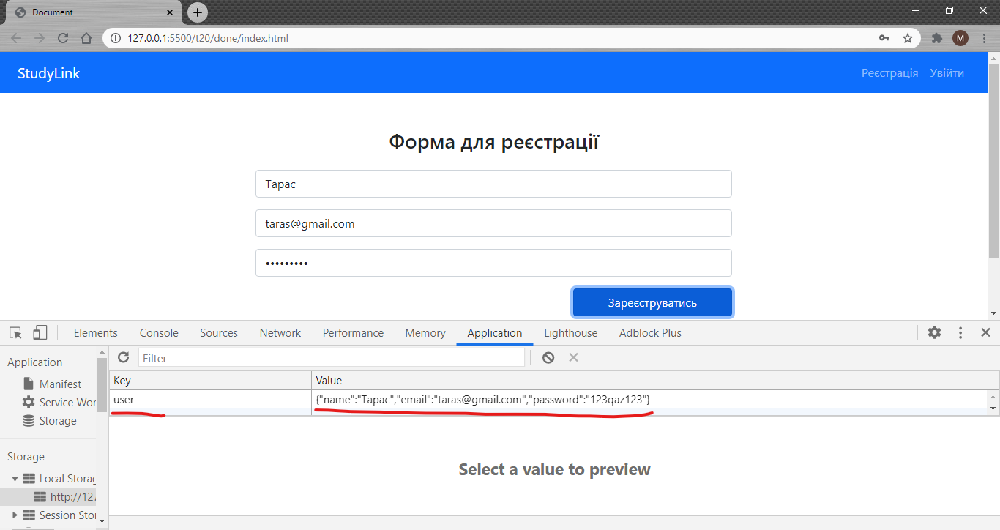
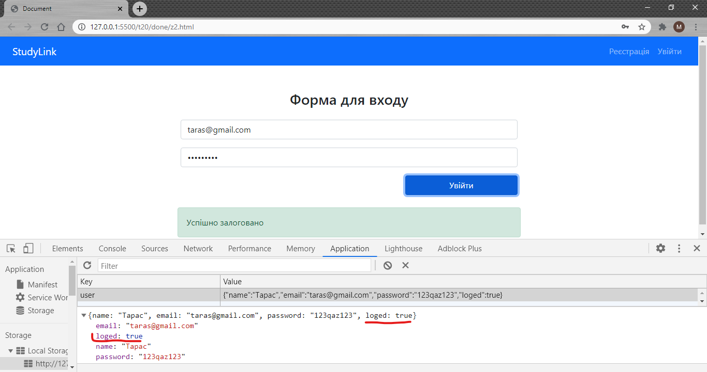
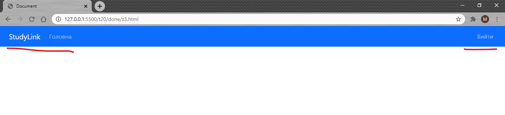
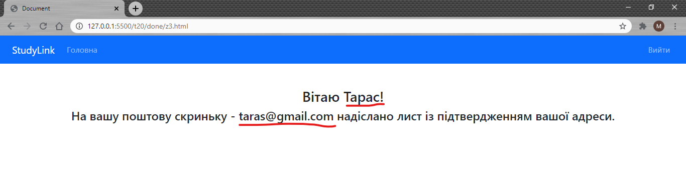

Тема 20. Модуль
1. Використайте готову верстку для завдання: index.html, z2.html, z3.html. Виводьте повідомлення про помилки підчас реєстрації або про її успіх.

2. Зберігайте інформацію про користувача у localstorage

3. Створіть перевірку логіну і паролю з виведенням помилок (невірний логін, невірний пароль). Якщо пароль було введено правильно додайте поле loged у обєкт user який буде відповідати за те чи залогований зараз цей коритувач.

4. Своріть окремий script який буде присутнім на всіx сторінках. Він перевірятиме чи користувач залогований і буде відображати нові пункти меню (Головна) і приховуватиме вкладки реєстрація та увійти. Замість них буде відображатись вкладка Вийти яка видалятиме коритувача із localStorage.

5. У вкладці головна відобразіть повідомлення для користувача
